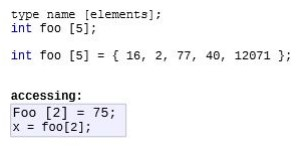
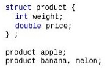
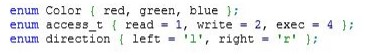
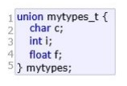

17. ODVOZENÉ DATOVÉ TYPY V C++
Textové řetězce
Char
Char je primitivní datový typ, který uchovává 1 bytový integer, který však není interpretovaný jako celé číslo, ale jako ASCII znak. Char tedy může být inicializován znakem v jednoduchých uvozovkách a nebo integerem, který bude odpovídat příslušnému znaku v ASCII tabulce.
Char sekvence
Ve zkratce pole charakterů, které v sobě uchovává více charakterů a dohromady skládají string. Pole charakterů je možné inicializovat jako jednotlivé položky pole nebo jako string, tedy pomocí dvojitých uvozovek. Pokud inicializujeme jako jednotlivé položky, posledním znakem pole by měl být nulový znak ('\0'), který označuje konec textového řetězce (pokud inicializujeme pomocí dovojitých uvozovek, tento znak se přidává automaticky).
char text[] = {'k', 'a', 'r', 'e', 'l', '\0'};
char text[] = "karel";
String
V C++ je string objekt, který reprezentuje sekvenci charakterů. Pokud tedy chceme použít string musíme importovat knihovnu <string>. Proměnnou poté můžeme definovat pomocí klíčového slova string a inicializujeme ji pomocí textového řetězce ve dvojitých uvozovkách.
string text = "karel";
Operace s textovými řetězci
Pro práci s textovými řetězci slouží knihovna <cstring>, ve které se nachází spoustu užitečných funkcí.
Načítání z klávesnice
První způsob jak načíst řetězec z klávesnice je pomocí objektu cin a směrovacích šipek (>>), které slouží jako základní třída pro získávání dat od uživatele.
Druhým způsobem je metoda cin.get(), které bez zadaných argumentů vezme od uživatele pouze jeden znak. Je možno do argumentů zadat počet znaků, které má metoda od uživatele zjistit.
Třetím způsobem je metoda cin.getline(), která vezme od uživatele celý řádek nebo dokud nenarazí na znak nového řádku ('\n'). Tato metoda za uložený textový řetězec sama přidá nulový znak, který slouží jako ukončení textového řetězce
Výpis
- Výpis probíhá pomocí objektu cout.
- Dékla řetězce, velikost proměnné, kopírování
- Na zjištění délky textového řetězce v c++ slouží funkce proměnná.length() nebo proměnná.size().
- Velikost jakékoliv proměnné se zjistí pomocí funkce sizeof(proměnná)
- String lze kopírovat pomocí metody strcpy(kam,co)
Pole
Pole je datová struktura, která dokáže uchovávat více prvků stejného datového typu na jednom místě. Každý prvek má přidělený svůj vlastní prostor označený číslem(indexem). Pole inicializujeme tak jako kdybychom chtěli vytvořit jednoduchou proměnnou, jen za její název přidáme hranaté závorky a do nich napíšeme velikost pole, tedy kolik prvků chceme, aby v sobě pole mohlo uchovat. Hodnoty do pole můžeme dosazovat při inicializaci pomocí složených závorek, do kterých vpisujeme hodnoty za sebou, nebo můžeme po inicializaci pole přistoupit na určitý index pole a dosadit do něj specifickou hodnotu.
Délka pole
Délku pole můžeme zjistit pomocí funkce pole.size() z knihovny array nebo pomocí formule sizeof(pole)/sizeof(*pole). Formule nejdříve zjistí velikost všech prvků v poli a poté ji vydělí velikostí jednoho prvku z pole (*pole do funkce sizeof() dosadí ukazatel na pole , ukazatel na pole ukazuje pouze na první prvek v poli, takže ukazatel na pole = jeden prvek pole ) a tak zjistíme kolik prvků se v poli vlastně nachází.
Struktura
Struktura je datová struktura, která dokáže uchovávat více proměnných nebo metod pod jedním jménem. Je velmi podobná třídě avšak se liší tím, že zde není přítomná dědičnost nebo konstruktory či destruktory. Struktura v sobě může uchovávat jak proměnné tak i metody. K těmto proměnným či metodám se přistupuje stejně jako u tříd pomocí názvu struktury, tečky a následně jménem proměnné nebo metody.
Enum (česky: výčtový typ)
Enum umožňuje vytvoření vlastního datového typu. Můžeme definovat co se v námi vytvořeném datovém typu může nacházet. Můžeme ho na příklad použít pro vytvoření datového typu na uchovávání přistupových pravomocí, směrů nebo třeba barev.
Union
Vzhledově se podobá struktuře. Jedná se ovšem o datovou strukturu, ve které všechny prvky obsazují stejný fyzický prostor v paměti a proto union může uchovávat pouze jeden prvek v jeden čas. Velikost unionu se rovná velikosti největšího prvku, který se v něm nachází.
